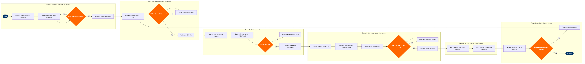

| Step | L4 Step Name | KPI / Target | Pain Point / Risk | Gate |
|---|---|---|---|---|
| 1.1 | Confirm seasonal schedule freeze milestone | Schedule frozen ≥8 weeks before IATA seasonal deadline | SkyWORKS freeze locks the shared planning workspace; late changes require an emergency amendment process that triggers full GDS re-distribution | ⚠ |
| 1.2 | Extract full flight schedule from SkyWORKS | Extract completeness ≥99.5% of scheduled flight legs | SkyWORKS export occasionally omits wet-lease and codeshare-operated segments, requiring manual reconciliation before SSIM generation | |
| 1.3 | Validate schedule data completeness and codes | Data quality score ≥99% (missing or invalid fields <1% of records) | Missing IATA airport codes or unrecognised aircraft ICAO type codes cause SSIM Chapter 7 format rejection at downstream GDS ingestion | ⚠ |
| 2.1 | Generate SSIM Chapter 7 format file | File generated within 4 business hours of schedule freeze confirmation | SkyWORKS SSIM output does not include non-IATA member charter operations; manual record append required, increasing error risk | |
| 2.2 | Run IATA SSIM syntax and schema validation | Zero critical format errors before external submission | SkyWORKS embedded IATA SSIM validator version lags IATA annual publication cycle by up to 6 months, causing false positives on new record type extensions requiring manual sign-off | ⚠ |
| 2.3 | Correct SSIM format errors and re-validate | Error resolution cycle completed within 2 business days | Iterative correction loops frequently triggered by aircraft sub-fleet code changes (e.g. 73H vs 73W); no automated mapping maintained between SkyWORKS fleet types and SSIM equipment codes | |
| 3.1 | Identify slot-controlled airports in schedule | Slot request list submitted ≥4 weeks before IATA scheduling conference | IATA Level 2/3 coordination status changes seasonally with no automated alert; reclassification of an airport discovered post-SSIM generation forces last-minute slot programme additions | |
| 3.2 | Submit slot requests to airport coordinators | Submission acknowledgement received from all coordinators within 5 business days | Some regional coordinators (e.g. ACNUSA for Paris CDG, NACC for Caribbean) require national-format messages rather than standard IATA WSG SSIM; manual reformatting needed per coordinator | ⚠ |
| 3.3 | Reconcile slot confirmations against requests | Slot hit rate ≥90% of requested times within ±30 minutes | Slot denials at Level 3 constrained airports (LHR, JFK, FRA) require re-planning iterations with the Network team; no automated feedback loop into SkyWORKS to propagate confirmed times back to the live schedule | ⚠ |
| 4.1 | Transmit SSIM to Sabre Schedule Distribution | Sabre display accuracy ≥99% within 48 hours of transmission | Sabre SDS equipment type mapping for new aircraft variants (e.g. A321XLR, 737 MAX 10) lags IATA SSIM type code releases by up to one schedule season, causing booking class display errors | |
| 4.2 | Transmit SSIM to Amadeus and Travelport GDS | Display accuracy ≥99% within 48 hours on both GDS platforms | Amadeus and Travelport have different SSIM ingestion cutoff times and batch processing windows; staggered submissions required to avoid inconsistent schedule displays across booking channels during the transition window | |
| 4.3 | Distribute schedule data to OAG and Cirium | Schedule data live on OAG and Cirium within 72 hours of SSIM receipt | OAG charges amendment fees for mid-cycle corrections; unplanned network changes require budget pre-approval before re-submission, introducing a 2–5 day delay in schedule visibility for travel agencies and competitors | |
| 4.4 | Verify GDS schedule display accuracy post-load | GDS display error rate <0.5% across sampled flights | GDS automated post-load checks do not cover all booking class inheritance mappings for new routes; manual spot-check required for every new city-pair added to the schedule | ⚠ |
| 5.1 | Distribute SSIM to codeshare and interline partners | Partner receipt confirmation received within 48 hours for ≥95% of partners | SITA STB acknowledgement messages do not distinguish between received and processed status; partners occasionally load superseded SSIM versions when multiple amendments are in flight simultaneously | |
| 5.2 | Notify airports of schedule via IATA AHM 090 | Airport acknowledgement received from ≥95% of notified airports within 5 business days | AHM 090 message format compliance varies by airport handler; some outstations require a direct email supplement alongside SITA MATIP messages, adding manual workload with no audit trail in AMS | |
| 6.1 | Archive versioned SSIM with change log | 100% version retention; any historical SSIM retrievable within 1 business hour | No automated versioning in SkyWORKS SSIM module; manual naming conventions lead to version confusion when multiple mid-season amendments are active, creating audit and regulatory traceability risk | |
| 6.2 | Manage mid-season SSIM amendment cycle | Full amendment cycle (generate → validate → distribute → verify) completed within 5 business days | Mid-season amendments trigger full re-distribution to all GDS, aggregators, and partners; SkyWORKS SSIM module has no selective-update capability, so even single-flight changes require a complete file re-transmission | ⚠ |